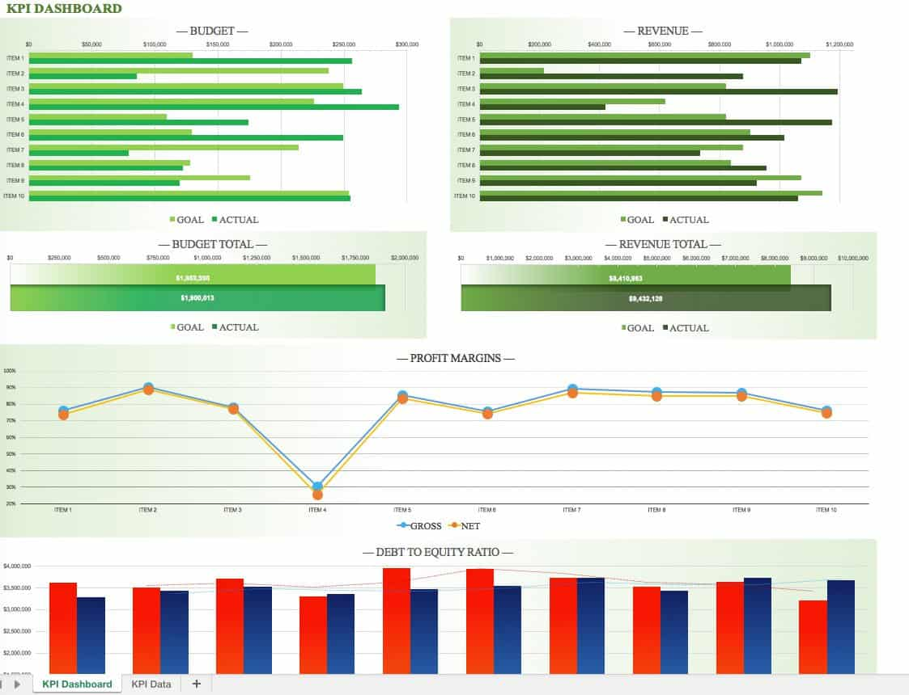

Productividad e Indicadores de Desempeño
La productividad mide la relación entre la cantidad de bienes producidos y los recursos (mano de obra, energía, materiales) invertidos para lograrlo. Por otro lado, la eficiencia compara el rendimiento real obtenido contra un estándar ideal establecido previamente por la ingeniería del proceso.
El Uso de los KPIs en la Planta
Los Indicadores Clave de Desempeño (KPIs) actúan como el tablero de control de un vehículo, permitiendo a la gerencia visualizar desviaciones operativas en tiempo real y tomar decisiones basadas en datos objetivos, eliminando las suposiciones del taller.
Indicadores Fundamentales de Clase Mundial
- OEE (Eficiencia Global de los Equipos): Multiplica la Disponibilidad de la máquina, el Rendimiento de la velocidad y la Tasa de Calidad de las piezas.
- Tasa de Defectos: El porcentaje de piezas de plástico rechazadas sobre el total de unidades fabricadas.
- Tiempo de Ciclo: El tiempo total requerido desde que cae la materia prima a la tolva hasta que sale la pieza terminada.
Ejemplos de Indicadores Industriales
- Evaluación semanal del OEE en la línea de inyección para justificar la adquisición de nuevos moldes ágiles.
- Medición del consumo de energía por kilogramo de resina plástica procesada en extrusión.
- Monitoreo diario del cumplimiento del plan de producción con relación a las promesas de carga comercial.

Diccionario de Indicadores de Rendimiento Planta
| Indicador (KPI) | ¿Qué Mide Exactamente? | Ejemplo de Aplicación Práctica |
|---|---|---|
| OEE (Overall Equipment Effectiveness) | Grado de aprovechamiento real de la maquinaria industrial. | Determinar que una sopladora rinde al 65% debido a microparadas eléctricas. |
| Tasa de Defectos (Scrap Rate) | La eficiencia en el uso correcto de materiales. | Controlar que no se supere el 2% de desperdicio por purgas defectuosas. |
| Tiempo de Ciclo (Cycle Time) | La velocidad y ritmo de respuesta de un proceso determinado. | Medir que toma exactamente 22 segundos moldear una cubeta plástica estándar. |